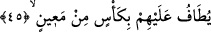
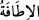
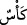
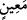
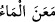
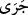
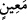
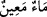

sağlamaları ebrâr olan kulların niteliğidir. Ahrâr kullar ancak Mevlâları olan yüce Zât’a
vuslat ile ünsiyet ve dostluk sağlarlar. Yahya b. Muâz’a: “Dost dosta ikbâl edip yüz
yüze gelir mi?” diye soruldu. Yahya b. Muâz; “Dost hiç dosttan yüz çevirir mi?” diye
cevap verdi. Çünkü bir dost diğerinin aynasıdır. Allah Teâlâ mukarreb kullara her lahza,
her saniye ve her an tecellî eder. Bu mukarreb kulların zahirleri cennet nimetlerine
dalmış oldukları halde gönül dünyaları hep yüce dostun ünsiyet ve dostluğu ile dâimdir.
Kemal Hocendî der ki:
Devlet, iki cihan mührünün elimde olması değildir
Devlet ve saâdet Seni bulmuş olmamdır
Allah Teâlâ, ihlâsa erdirilenlerin (muhlas) yedikleri ve içtikleri şeyleri ve onların
cennetteki meskenlerini zikrettikten sonra içeceklerini ne şekilde içtiklerini beyan etmek
için şöyle buyurdu:
45. Onlara pınardan (doldurulmuş) kadehler dolaştırılır.
“Onlara pınardan (doldurulmuş) kadehler dolaştırılır.” Bu ifade, cennet ehlinin
ünsiyet ve dostluk meclislerinin tekâmül seviyesini hikaye etmek üzere bina edilen
isti’nâfî bir sözdür. Yani sanki cennet ehli böyle nasıl huzurlu ve mutlu oluyorlar? diye
soruluyor ve bu ifade ile cevap veriliyor.
“Tavaf,” bir şeyin etrafında dönmek, dolaşmaktır. “ kelimesi de aynı mânâdadır.
et-Tehzîb’de der ki: “, bir şeyin etrafını dolaşmak demektir. Mânâsı şudur:
Onların üzerinde/etrafında dolaşılır. Yâni cennetin sâkîleri ve hizmetçileri onların
başları üzerinde dolaşırlar.
İçinde şarap olan cam kaba “ denilir. İçinde şarap yoksa ona kadeh ve inâ’
denilir. Zira cennette su ırmakları olduğu gibi şarap ırmakları da vardır. “Müttakîlere
vâdolunan cennetin durumu şöyledir: İçinde bozulmayan sudan ırmaklar, tadı
değişmeyen sütten ırmaklar, içenlere lezzet veren şaraptan ırmaklar ve süzme
baldan ırmaklar vardır. Orada meyvelerin her çeşidi onlarındır. Rablerinden de
bağışlama vardır. Hiç bu, ateşte ebedî kalan ve bağırsaklarını parça parça edecek
kaynar su içirilen kimselerin durumu gibi olur mu?” (Muhammed 47/15)
el-Müfredat’ta der ki: “ kelimesi Arapların “ sözünden alınmıştır. Yani “ aktı demektir. Burada “ kelimesinin “ yani “ göze ve pınar suyu
olduğu da söylenmiştir. Bu durumda kelimedeki “” zâiddir.
Âyette şuna işaret edilmektedir: Bir topluluk dolu kadehlerden şarap içerler. Şarap ise